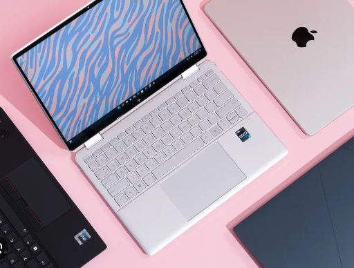

Look at this button! Wow, let's click on it!
Learn moreLaptops are praised for their efficiency, offering users a versatile and portable computing experience. Their compact design and built-in components allow for efficient multitasking, enabling users to seamlessly switch between various applications and tasks. The integration of energy-efficient processors and advanced power management systems contributes to extended battery life, enhancing the overall efficiency of laptops.
Laptops are praised for their efficiency, offering users a versatile and portable computing experience. Their compact design and built-in components allow for efficient multitasking, enabling users to seamlessly switch between various applications and tasks. The integration of energy-efficient processors and advanced power management systems contributes to extended battery life, enhancing the overall efficiency of laptops.
Laptops are praised for their efficiency, offering users a versatile and portable computing experience. Their compact design and built-in components allow for efficient multitasking, enabling users to seamlessly switch between various applications and tasks. The integration of energy-efficient processors and advanced power management systems contributes to extended battery life, enhancing the overall efficiency of laptops.